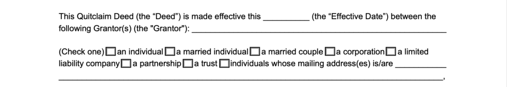
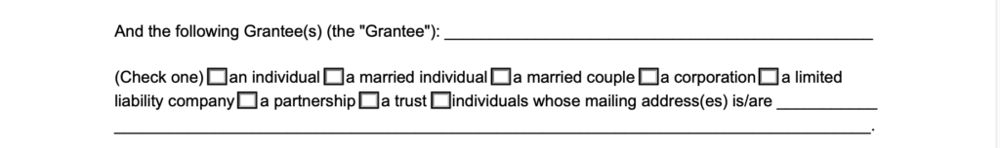
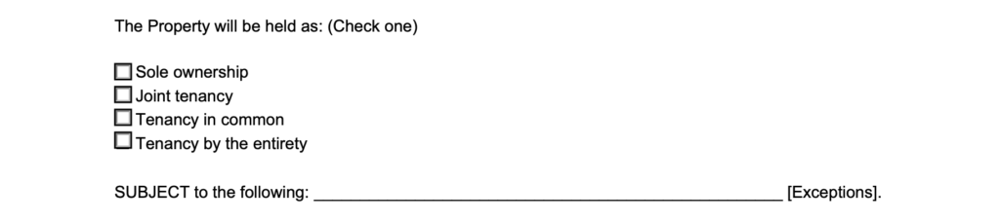
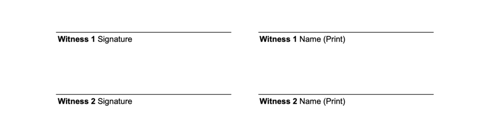

A Quitclaim Deed is a legally binding document used to efficiently transfer property (real estate) from one person (or entity) to another person (or entity).
As a result of the risk of no title assurances, quitclaim deeds are usually only used in Real Estate when transferring property between two people who trust one another, such as family members, or to correct a mistake with the owner’s title to the property (cure a title defect).
Quitclaim Deed – By State
- Alabama
- Alaska
- Arizona
- Arkansas
- California
- Colorado
- Connecticut
- Delaware
- District of Columbia
- Florida
- Georgia
- Hawaii
- Idaho
- Illinois
- Indiana
- Iowa
- Kansas
- Kentucky
- Louisiana
- Maine
- Maryland
- Massachusetts
- Michigan
- Minnesota
- Mississippi
- Missouri
- Montana
- Nebraska
- Nevada
- New Hampshire
- New Jersey
- New Mexico
- New York
- North Carolina
- North Dakota
- Ohio
- Oklahoma
- Oregon
- Pennsylvania
- Rhode Island
- South Carolina
- South Dakota
- Tennessee
- Texas
- Utah
- Vermont
- Virginia
- Washington
- West Virginia
- Wisconsin
- Wyoming
Table of Contents
What is a Quitclaim Deed?
A quitclaim deed form (or quitclaim) is a legal real estate document for the grantor (owner/seller) to transfer ownership rights of a piece of real property to the grantee (purchaser).
With a quitclaim deed, the grantor (person transferring the property) transfers whatever rights and legal interest they have in the property. The grantor is only promising to give up their rights.
There are no warranties as to the quality of the real estate title.
This means grantees (persons receiving the property) aren’t fully protected with transfers. They won’t get full ownership if there is an outstanding lien or other legal claims against the property.
The new owner may not record and prove their property ownership without this document.
What is the Purpose of a Quitclaim Deed?
A quitclaim deed aims to quickly and easily transfer property ownership from one party to another.
Although this document provides no promises regarding ownership or title to the property, many states have an implied good faith presumption that the grantor is unaware of any other owners or conflicts.
Additionally, some states have an implied good faith assumption that the grantor is free to transfer ownership and title.
Keep in mind that the document allows the ownership transfer of a property only. Therefore, if the grantor has a real estate mortgage on the property, they’re still responsible and liable for that mortgage.
When to Use a Quitclaim Deed
Property owners mostly use quitclaim deeds for intra-family transfers, estate planning, or to cure a title defect.
Here are some examples:
- Divorce: An ex-spouse releases claim to the home to the other formerly married party after a divorce settlement
- Marriage: The spouse wants to add their new spouse to the title of the property
- Chain of Title Defect: Title insurance companies find others with potential interests in the property and ask them to waive interest in the property
- Title Defect: Fix any errors such as misspelled names or other clerical mistakes
- Family Member: The parent wants to transfer title to a child, or a person transfers property between other family members like siblings
- Estate Planning: The person transfers property to a living trust
- Business: Quitclaim deed transfers between parent companies to subsidiaries
- Public Auction Sale: Tax/public auction sale where the buyer assumes the risk of a defective title
Real property owners often use a quitclaim deed as a complementary document to a divorce or separation agreement.
How Does a Quitclaim Deed Work?
A quitclaim deed form conveys title and whatever ownership the grantor has in the property. Here are the different types of ownership it might mean:
- Sole Ownership – owned entirely by one party (individual or entity)
- Joint Tenancy – owned equally by two or more people with the right of survivorship (if one dies, ownership passes to the surviving person), and each person must agree to sell their legal interests in the property.
- Tenancy by the Entirety – a joint tenancy between a legally married couple
- Tenancy in Common – owned by two or more people (equally or in different percentages) with no right of survivorship and the right to individually sell their legal interests in the property
- Community Property – any property obtained by one spouse during a marriage is “community property” and owned by both spouses, currently recognized in ten states in the U.S.
Quitclaim Deed vs. Warranty Deed
Unlike quitclaim deeds, some deeds offer protection and warranties for the grantee.
The most common types are special warranty and general warranty deeds.
In both cases, the grantor owns the property rightfully and has the legal right to transfer property title and warrant against certain title defects.
Here is a table comparing the three most common types of property deed transfer forms:
| Quitclaim Deed | Special Warranty Deed | General Warranty Deed | |
|---|---|---|---|
| Warranties | NO warranties as to the quality of title | Warrants against ONLY those defects caused by the current grantor | Warrants against ALL defects, even those not caused by the current grantor |
| Period Covered | None | Only when the current grantor owned the property | The property’s entire history |
| Most Common Use | When little to no money is exchanged - estate plans, divorce, fixing title defects | When money is exchanged - trusts, fiduciaries, tax sales, commercial real estate sales | When money is exchanged - purchasing a home, obtaining a mortgage |
What to Include in a Quitclaim Deed
There are several things to consider when creating your quitclaim deed form. Refer to these helpful tips below before you write your document.
A simple quitclaim deed should identify the following essential elements:
- Grantor: the name and mailing address of the individual(s) or entity who currently owns the property and will transfer ownership
- Grantee: the name and mailing address of the individual(s) or entity who will receive the property title and become the new property owner
- Consideration: how much, if anything, is being paid for the property
- Location: the city and county of the property
- Legal Description: a land description in words that uniquely identifies a particular piece of property (usually listed on the prior deed)
- Parcel Number: the number assigned by the tax assessor (usually listed on your property tax statement)
- Preparer: the name and mailing address of the person who prepared the document
- Signatures: the signature of the grantor and grantee and the date of the signatures. Depending on your state’s laws, the grantee may not be required to sign
- Witnesses: the individual(s) who watch the grantor and grantee sign the quitclaim deed. Note that depending on the laws of your state, there could be anywhere from zero to two witnesses required
- Notary: a notary public who verifies that the signatures are authentic
In addition to the above basic provisions, here are some additional terms you may want to include if they apply to your property:
- Easements: the grantor can reserve the right to continue using a portion of the land, such as access to a private road or fishing pond
- Encumbrances: any encumbrances (claims or liens) against the property the grantor is aware of
- Life Estate: the grantor can reserve a life estate interest in the property, usually for tax purposes, allowing them continued use of the property until their death
- Mineral Rights: the grantor can reserve all or a portion of any remaining interest in the property’s subsurface oil, gas, or other mineral rights
Certain words on a quitclaim deed form may inadvertently create warranties. Before signing, check your state’s laws and regulations regarding what these words mean.
How to File a Quitclaim Deed
You should file the quitclaim deed with your local county recorder’s office (see table below) to create an official public record of the transfer of ownership, give public notice, and prioritize the grantee’s claim of ownership.
While filing with the local county recorder or clerk does not guarantee a perfect title, it does create a public record of your claim to ownership.
Where to Record a Quitclaim Deed
Check with your local county clerk regarding additional forms you might need to file, such as a Preliminary Change of Ownership or a Property Transfer form.
Also, ask about transfer taxes or fees associated with the transfer and filing.
Review our state-specific forms for more detailed information on filing a quitclaim deed in your state.
How to Write a Quitclaim Deed
Before filling out your quitclaim deed form, write your state at the top of the document.
NyAi suggests you use a state-specific quitclaim deed form as a best practice.
Step 1 – Fill in the Preparer and Recipient Name and Address
1. Preparer. Provide the full name and address of the individual preparing or writing the quitclaim deed. The preparer may be the grantor, grantee, or a third party.
2. Recipient. Write the name and address of the person who should receive the recorded deed and tax statements after recording.

Step 2 – Enter Effective Date and Grantor(s) Details
3. Effective Date. Fill in the full name of the grantor(s), the property’s current owner. Indicate if the grantor(s) is an individual(s), a married couple, or an entity (i.e., corporation, LLC, partnership, or trust).
4. Grantor(s). Provide the mailing address for the grantor(s). If there is more than one grantor, provide just one mailing address to receive correspondence).

Step 3 – Fill in Grantee(s) Details
5. Grantee(s). Write the full name of the grantee(s) the individual or entity that will become the new owner. Indicate if the grantee(s) is an individual, multiple individuals, a married couple, or an entity (i.e., corporation, LLC, partnership, or trust).

Step 4 – Identify Transfer and Property Details
6. Consideration. Enter the amount of money paid as consideration for the real estate transfer. If the property is transferred as a gift, you can specify a nominal amount, such as $10, as consideration.
7. County and State. Write the county and state where the property is located. Specify whether or not the property is in an unincorporated area.
8. Legal Description. A legal description is a geographical description commonly identified by a government survey, metes, bounds, or lot and block. You can find this description in the property’s deed or through the county assessor.

Step 5 – Choose Ownership Option and Exceptions
9. Ownership. Specify how the new owners will hold the property. We have included the most common forms of property ownership on our form.
10. Exceptions. State whether or not there are any exceptions to the property, such as an easement (reserve right to continue using a portion of land), covenant, reserve life estate, or mineral rights.

Step 6 – Identify Homestead Option
11. Homestead. Check whether or not the property is the grantor’s homestead. Generally, a homestead is a person’s primary residence.
Step 7 – Choose Transfer Tax Option
12. Transfer Tax. Specify whether or not the property transfer is exempt from transfer tax. Refer to state or local laws, as many states provide various exemptions from transfer tax, such as transfers between parent and child. If not exempt, specify the transfer tax the grantor or grantee will pay for the transfer.
Step 8 – Identify Witnesses
13. Witnesses. One or two witnesses must sign the deed depending on the property’s state. Check your local state law to see if any witnesses need to sign.

Quitclaim Deed Sample (PDF & Word)
Below, you can find a sample of what a quitclaim deed typically looks like:

If a quick, simple transfer of real property is all you need, you may be able to use a do-it-yourself quitclaim deed.
Our blank, printable quitclaim deed template allows an owner to transfer and quitclaim their right and title to real property to a new owner. It also provides for exceptions such as easements or life estates.
If you would rather have step-by-step guidance, use our document builder that walks you through creating a quitclaim deed unique to your situation. Our builder assists you through the document creation process in a simple way that makes sense and saves time.
Frequently Asked Questions
How long is a quitclaim deed good for?
Quitclaim deeds transfer ownership rights ‘for all time,’ but the parties to the deed have a period after execution in which either can challenge the deed’s validity. After that time, a statute of limitations goes into effect, and the parties may no longer contest the deed.
Does a quitclaim deed need notarized?
Yes, quitclaim deeds need to be notarized to be considered executed. Additionally, some states require witness signatures
Does a quitclaim deed affect taxes?
Quitclaim deeds do not relieve the grantor of tax obligations. Grantors who owe taxes during the period in which they owned the property legally must pay the tax before the execution of the deed. Additionally, they must pay any tax liens on the property before they can transfer the title.
What are homestead rights?
Some states have homestead requirements where a spouse cannot sell or transfer the homestead without the signature or acknowledgment of the other spouse.
In addition, spouses may have inheritance or dower and curtesy rights if the property is community property.
If only one spouse is the grantor and the one signing the quitclaim deed, the other spouse should sign an acknowledgment waiving and releasing any possible residual rights.
What are the tax implications of a quitclaim deed?
After the grantor transfers property ownership, the obligation to pay the property taxes falls to the grantee. The appropriate government entities will mail tax bills to the address on the deed.
Some states impose a real estate transfer tax on property transfers. The transfer tax is usually a small percentage of the consideration or purchase price.
However, most states provide various exemptions from the transfer tax, such as transfers between parents and children.
Other federal income, gift, or inheritance taxes may accompany a quitclaim deed transfer.
Consult a tax lawyer or certified public accountant, or research other legal services to learn more about using a quitclaim deed for your real estate goal.
Where can I get a quitclaim deed form?
You can find quitclaim deed forms online or at your local county recording office. With the right template, you can fill in the necessary information yourself.
Does a quitclaim deed expire?
No, a quitclaim deed does not expire, but it must be filed with the county clerk’s office to record the ownership transfer. If it is not recorded, it can create legal and financial challenges.
Filing the deed as soon as possible after the transfer is recommended because you obtain an official public record. This makes transferring the mortgage easier or avoids conflicts if another family member claims the property.